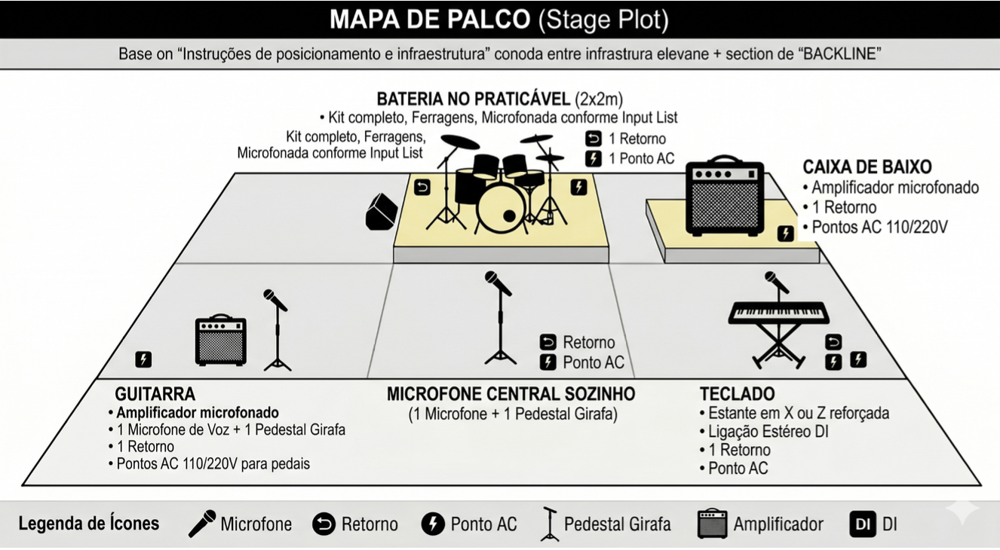

Produção
Documento para equipes de som, palco e produção. Formação de cinco integrantes — vocal, guitarra, baixo, teclado e bateria — com repertório de músicas autorais (EP) e covers (Alestorm, Korpiklaani, Dropkick Murphys, entre outros).
A ser fornecido pela casa ou contratante.
Canais sugeridos para a mesa de som:
| Canal | Instrumento | Microfone / via | Pedestal | +48V / insert |
|---|---|---|---|---|
| 01 | Bumbo | Shure Beta 52A / AKG D112 | Pedestal pequeno | Gate / comp |
| 02 | Caixa | Shure SM57 (ou similar) | Garra (clip) / pedestal P. | Comp |
| 03 | Chimbal (hi-hat)* | Shure SM57 / condensador | Pedestal pequeno | — |
| 04 | Tom | Sennheiser e604 (ou similar) | Garra (clip) | Gate |
| 05 | Surdo | Sennheiser e604 (ou similar) | Garra (clip) | Gate |
| 06 | Overhead L (pratos) | Microfone condensador | Pedestal girafa | +48V |
| 07 | Overhead R (pratos) | Microfone condensador | Pedestal girafa | +48V |
| 08 | Baixo (amp) | Shure SM57 / MD421 ou DI | Pedestal pequeno / cabo | Comp |
| 09 | Guitarra (amp) | Shure SM57 / e609 | Pedestal pequeno | — |
| 10 | Teclado (L) | Cabo P10 / direct box | Ligação direta (DI) | — |
| 11 | Teclado (R) | Cabo P10 / direct box | Ligação direta (DI) | — |
| 12 | Voz principal (centro) | Shure SM58 (ou similar) | Pedestal girafa | Comp |
| 13 | Back vocal (guitarra) | Shure SM58 (ou similar) | Pedestal girafa | Comp |
| 14 | Back vocal (baixo) | Shure SM58 (ou similar) | Pedestal girafa | Comp |
(*) Em caso de falta de canais ou microfones, o chimbal e a caixa podem ser captados pelo mesmo microfone.
Posicionamento e infraestrutura para a equipe técnica (visão da plateia):

Para auxiliar o técnico de som na timbragem — guitarras pesadas com elementos folk no teclado e bateria rápida — nossas referências são:
Para o conforto da banda antes e após a apresentação, solicitamos minimamente:
Baixa o rider em PDF, consulta o press kit ou entra em contacto para contratação e dúvidas técnicas.